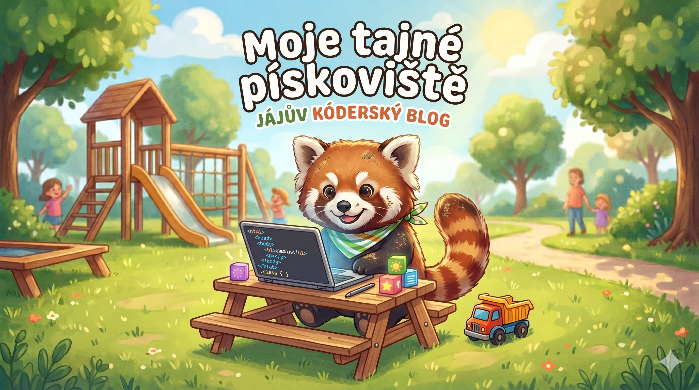

Domů
Články
Projekty

Poslední novinky
{% comment %} Spojíme články a projekty do jedné proměnné {% endcomment %} {% assign vsechno = site.clanky | concat: site.projekty %} {% comment %} Seřadíme od nejnovějšího (reverse) {% endcomment %} {% assign serazeno = vsechno | sort: "date" | reverse %} {% for polozka in serazeno limit:6 %}
{{ polozka.date | date: "%d.%m.%Y" }} {% if polozka.collection == "projekty" %} | 🛠️ Projekt {% endif %}
{{ polozka.title }}
{{ polozka.content | strip_html | truncate: 80 }}
{% endfor %}